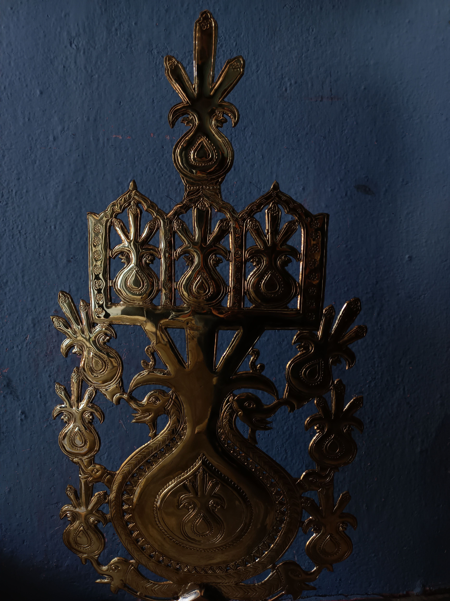
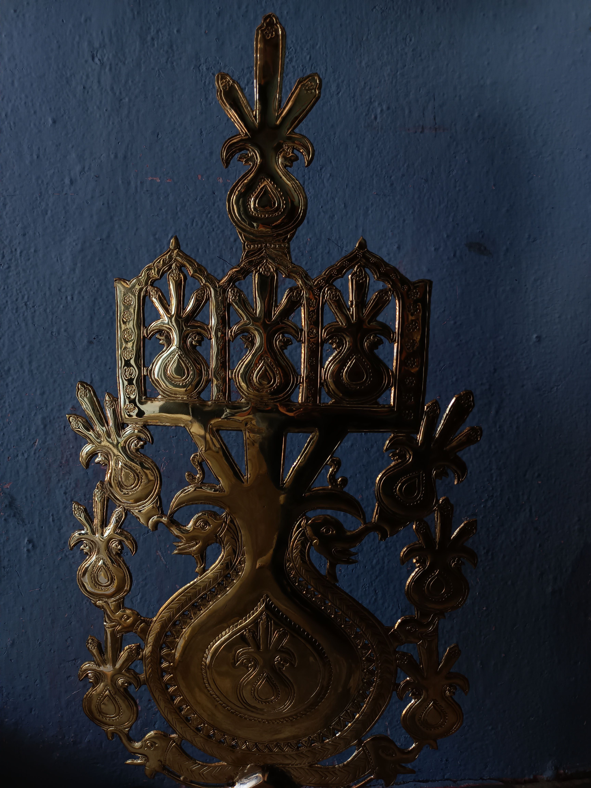

INTRODUCTION
More than 800 years of exquisite
sheet metal brass engravings
and relics can be found here,
in Pembarthi. Pembarthi is a
village situated about 80 km
from Hyderabad. The region
has witnessed glory during the
period of the Kakatiya dynasty
which had spanned 500 years.
Pembarthi has a rich history
of outstanding workmanship
of the Metalworkers or the
“Vishwakarma”.
Sheet metal craftsmanship
became famous as a result
of its use on the viagra has
(statues) and vahanas (chariots)
of various Hindu temples.
Pembarthi Brassware has
retained the vital nuances
of both Hindu and Muslim
influences over the years,
allowing it to mix smoothly
into both cultures. The famous
Geographical Indication has
been bestowed upon the craft
form.
HISTORY AND PATRONAGE

Pembarthi Village is known
across the world for its
brassware, artefacts, metal
tools, and everyday goods, as
well as statues, carvings, and
castings created from copper
alloys such as brass and bronze.
Pembathi Village’s
Metalworkers, or
“Vishwakarmas,” have a
long history of outstanding
craftsmanship dating back to
the Kakatiya Kingdom’s majesty
and glory. This Metal Craft
attained the peak of perfection
of highest degree of skill which
is demonstrated by the master
craftsmen.
The rulers of Pembarthi
patronised the Vishwakaramas
for building temples, making
‘Vigrahas’ - deity idols,
‘Vahanas’ – chariots, and other
creative accessories of temple
sculpture. The exquisite
Vigrahas, which are examples of
moulded crafts, and the ‘Keerthi
Mukha’, ‘Prabha’ - Pinnacles,
which adorn many notable
temples in South India.
The beauty and glory of the
Kakatiya dynasty gradually
gave way to the Nizam’s
power, resulting in a shift in
Pembarthi art. As a result,
during the Nizam period,
the Vishwakarmas created
and crafted household and
decorative objects like as
Pandans, Nagardans, Itar pots,
and Sangaridans. The rise of the
craft led to an increase in the
number of artisans families in
Pembarthi who were involved
in it at this time. The number
of artisan families involved
increased to around 600 during
this time.
Because of the mastery
and ability displayed by the
craftsmen, the craft has
endured political ups and downs
as well as natural disasters.
Following independence,
the craft had a renaissance,
resulting in a shift in demand
ADAPTION AND MODERN CHANGES
Present Status
The artisans take part in welfare
and awareness programs for the
artisans.
100 families are practicing
currently, (besides Vishwakarma
there are other communities
that practice it as well).
Online business is done
via Facebook, WhatsApp,
promotions via exhibitions.
ADAPTION OF THE ARTISANS
During different festivals like
Muharram, Mr Khalid one of
the pembarthi artisans gave
us an insight into how he
sells products according to
that particular festival, and
for the rest of the year, they
sell trophies, utensils, vases,
worship idols.
Presently their main focus is
home decorative items as there
is no much demand for brass
utensils.
Instead of making devatha
designs on some decorative
products, they replaced them
with other designs such as birds
and animal designs so that the
products can be purchased by
people of different religions and
communities and can be sold
globally.
Normally the head of the family
use to teach their children
pembarthi handicraft from the
age of 14-18 and then by the
age of 24 they use master that
skill, whereas now that the
time has changed the artisans
provide their children with
better education facilities for
betterment of their future.
STAGES OF PRODUCTION
PROCESS
Sheet Embossing
A metal sheet of brass is
required to emboss the
design on it.
Lac (Lakka) is spread on the
wooden plank that holds
the metal sheet and more
delicate design surfaces.
It is a mixture of Beeswax,
resins, castor, mustard oil,
brick and dust.
Chisel (Kila) is required to
carve the design on the
metal sheet.
Gas torch burner- needed
to melt the lac and join the
metal pieces.
Concentrated Acid (Nitric
acid, Sulphuric acid etc.) and
tamarind- used to wash the
product.
File and buffer- To smoothen
the edges and enhance its
lustre.
Diluted Gum- to stick the
design on the metal sheet.
Sheet Embossing / Flat Ornamentation
In this technique, a Brass or
copper sheet is cut according
to the requirement. Later they
shape and fix it on a wooden
table with the four sides of the
sheet covered with Lac (Lucca).
It effectively sets the sheet on a
wooden plank or table.
1. The design is drawn on a
paper sheet and later pasted
on the brass sheet. They are
carved on the sheets using
fine instruments (chisel and
hammer).
2. After carving the basic
design, the paper sheet is
removed. Lac is heated, and
the carved sheet is removed
from the plank. Further,
delicate carvings are added
by hammering the sheet
with different shapes and
sizes of chisels. Ash powder
is used to clean the sheet,
and detailed embossing is
added respectively. Some
parts are designed and
embossed individually and
later welded together using
a gas torch burner.
3. To provide the shine, acid
and tamarind are used to
wash the embossed sheet.
It is later filed to smoothen
the edges and buffed to give
illumination and lustre to the
surface
Hollow Sheeting
This process is used to make
hollow utilitarian or decorative
items.
In this process, the sheet
takes the shape of a hollow
container according to the
mould of POP used. A4’*4
‘ sheet of brass is taken
as the raw material. It is
weighed in kilograms and is
taken as per the customer
requirements. The metal
Sheet is measured as per
the mould required; An extra
two inches of the sheet is
also measured.
The sheet is beaten with
a variety of tools and a
hammer to give it a proper
shape. It is heated using
a blow torch and beaten
until the form is achieved.
Almost 75% of the work is
completed in this stage. It
is then washed in the Conc.
Acid to clean the surface.
The next step is to heat Lak
and pour it into the shaped
metal. Upon cooling, the
desired design is made on
the shaped metal as per the
artisan’s views.
The Lak is then heated
and removed. Once the
product is ready, it is either
delivered to the customer
or showcased in the
showroom.


 
